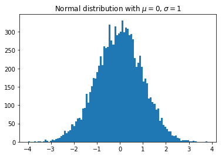
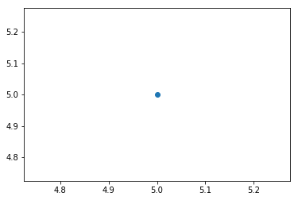

In [2]:
import matplotlib.pyplot as plt
import numpy as np
x = np.random.randn(10000)
plt.hist(x,100)
plt.title(r'Normal distribution with $\mu=0, \sigma=1$')
plt.savefig('matplotlib_histogram.png')
plt.show()

In [3]:
import matplotlib.pyplot as plt
plt.plot(5,5,'o')
plt.show()

In [4]:
import numpy as np
import pandas as pd
#from __future__ import print_function only for python 2
!pip install xlrd
print('xlrd installed!')
Requirement already satisfied: xlrd in /Users/leekent/anaconda3/lib/python3.6/site-packages (1.1.0)
distributed 1.21.8 requires msgpack, which is not installed.
You are using pip version 10.0.1, however version 18.0 is available.
You should consider upgrading via the 'pip install --upgrade pip' command.
xlrd installed!
In [ ]: